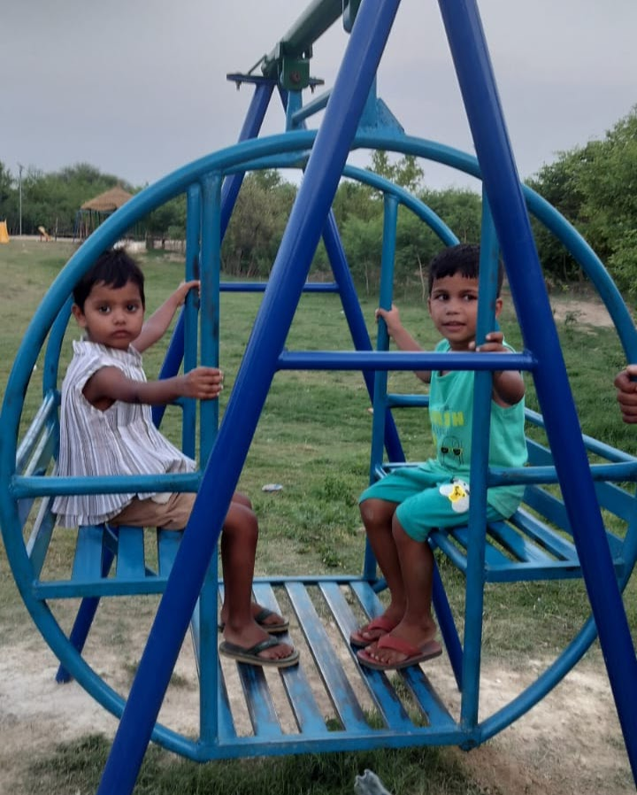
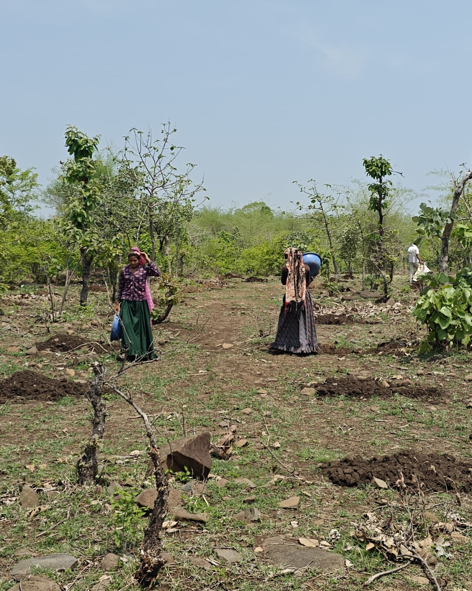
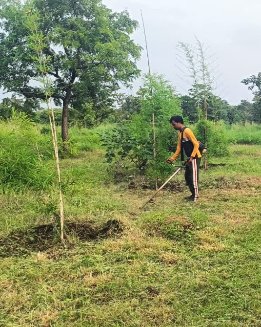
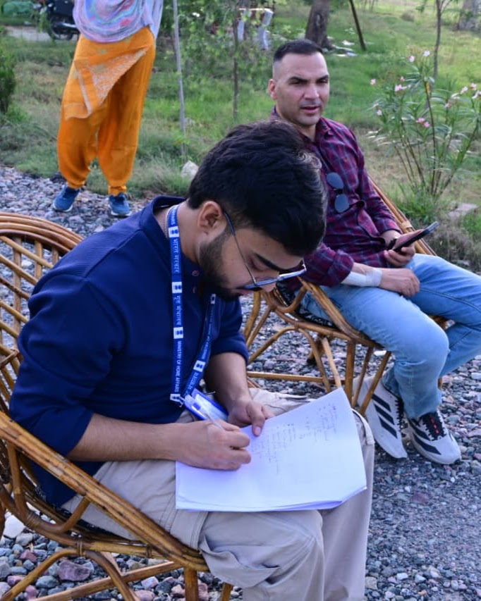
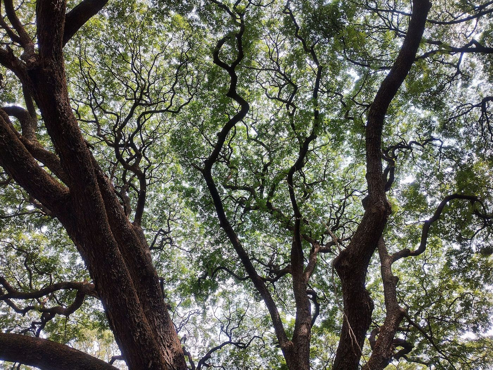
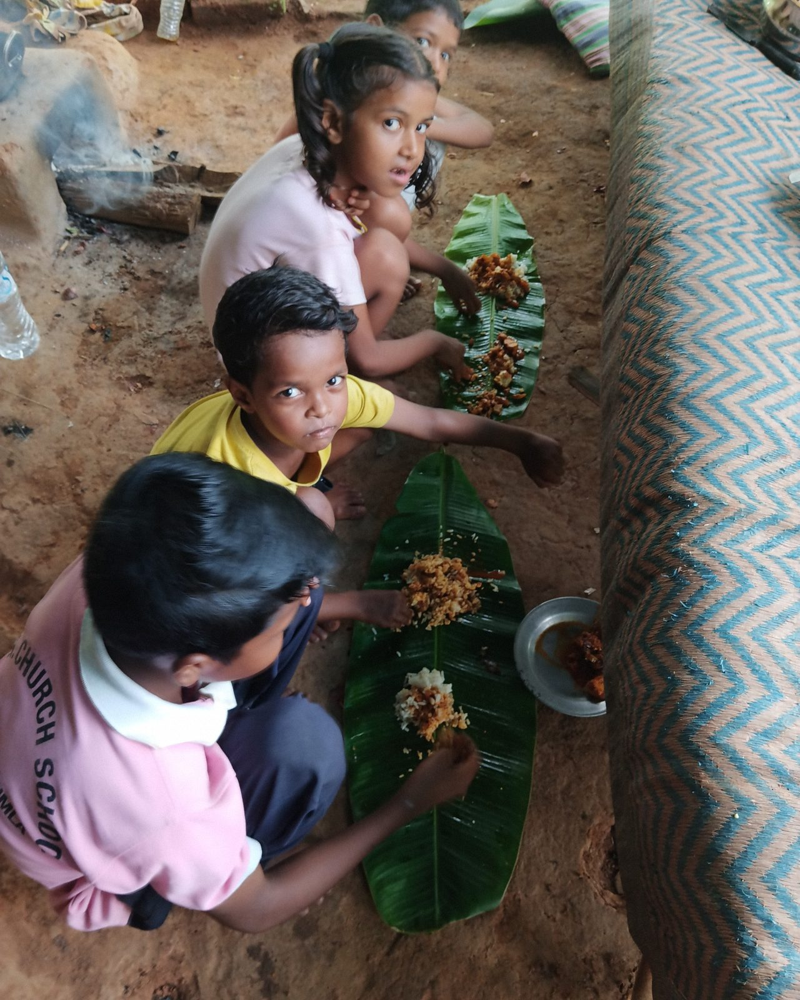

Environmental & Climate Researcher
ARKRAJBiswas
My path into environmental research started with agriculture. Since then, my work has moved through Earth and atmospheric sciences, geospatial analysis, forestry and environmental policy. I am interested in understanding environmental change through field evidence, spatial data and practical research.


.jpg)





Areas of work
What I work around
Connected questions across landscapes, cities and policy.
Climate & Environmental Change
Understanding environmental change and the ways it affects landscapes and human systems.
→ 02Urban Environment
Studying urban heat, green spaces and changing urban landscapes through spatial analysis.
→ 03GIS & Remote Sensing
Using satellite imagery, GIS and quantitative analysis to understand environmental patterns.
→ 04Forestry & Sustainability
Researching urban forestry, environmental benefits and sustainability-oriented interventions.
→ 05Agriculture & Land Systems
Building on my background in agricultural sciences to explore environmental questions connected to land and livelihoods.
→ 06Environmental Policy
Connecting environmental evidence with policy evaluation, planning and implementation.
→How I approach research
Research, from different angles.
I am interested in research that does not stay inside one discipline. Some questions are best answered with satellite data and spatial analysis; others need field evidence, policy reading or a better understanding of how people experience a landscape. Much of my work sits somewhere between those approaches.
Current research · Ongoing
Human-centric urban forestry
National CAMPA project on the Nagar Van Yojana. Methodology shown — findings follow as confirmed.

Ongoing
Strategic Framework for Human-Centric Urban Forestry
Evaluating the socio-economic, psychological and governance outcomes of the Nagar Van Yojana — through GIS-based audits, socio-economic surveys, psychological well-being assessments, and attention to climate resilience, community well-being and participatory governance, towards a monitoring framework.
Open the entry →Selected work
Projects & writing
Verified assessments, studies and briefs. Full archive →
Live environmental data
Earth / Now
Real-time atmosphere where you are — weather and air quality, read like a scientist.
Somewhere on Earth
— °C
See what the atmosphere looks like where you are.
Long-term climate data
Climate Lens
Explore climate conditions through long-term environmental data. Observed series only — no trend claims.
Bengaluru, India
Example location — search for another place below.
These values are climate-data estimates, not direct observations from a local weather station.
— public occurrence records · —
Profile
A little about me.
I started out in Agricultural Sciences before moving into Earth and Atmospheric Sciences at Banaras Hindu University. My work has since expanded into environmental research, GIS, sustainability and policy. Today, I work as a Research Associate with National CAMPA under the Ministry of Environment, Forest and Climate Change, where I work on environmental analysis, monitoring, policy evaluation and documentation.

Have a research question, project or idea? Let's talk.
Research collaboration, environmental projects and professional opportunities.
Get in touch →